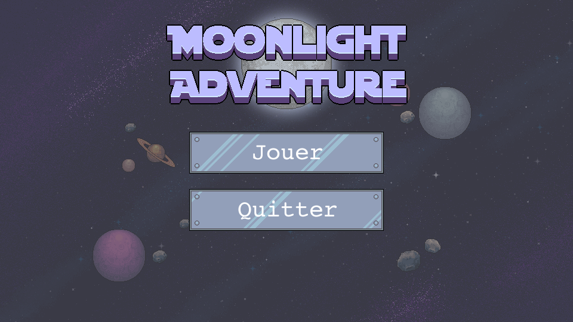
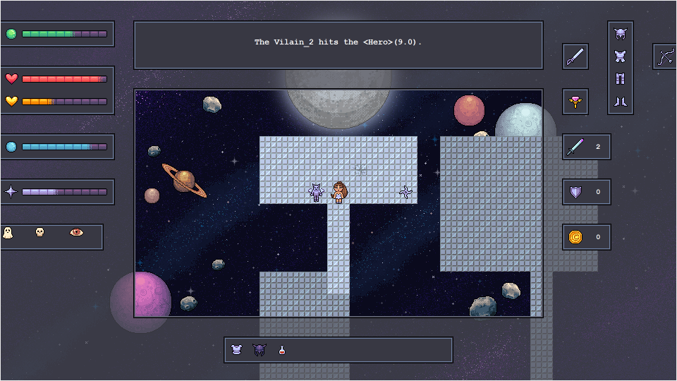

Depuis mon plus jeune âge, je suis passionnée par l’art. J’ai tout d’abord commencé par dessiner. Je me suis ensuite mise au pixel art et à la peinture. Aujourd’hui, j’aime également faire de la broderie, du scrapbooking ou encore de la couture. J’ai pu utiliser mes compétences en dessin et pixel art dans plusieurs projets comme par exemple pour le design de mon jeu de quilles ou encore pour un jeu Rogue like réalisé en Python avec des camarades.
 J’ai toujours apprécié écrire, que ce soit en cours de français ou de mon plein gré chez moi. J’aime utiliser ma plume pour m’exprimer à travers des poèmes ou des textes. L’écriture me permet de jouer sur la musicalité des mots et sur la sonorité des phrases pour pouvoir faire passer un message. À cela s’ajoute mon intérêt pour la calligraphie. C’est pourquoi je griffonne sur des cahiers durant mon temps libre, lorsque je suis inspirée. De nos jours, tout est numérisé et condensé dans des fichiers texte. Me saisir d’un simple stylo et d’une feuille de papier pour rédiger des textes me donne l’impression de réellement écrire chacun de mes mots.